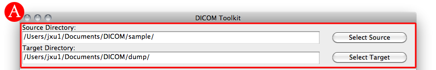
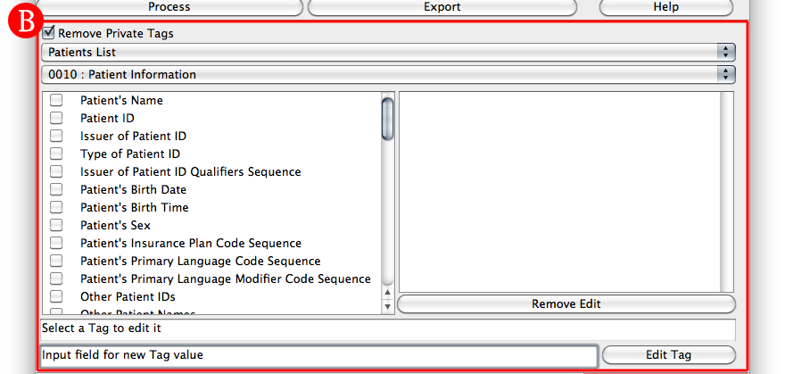
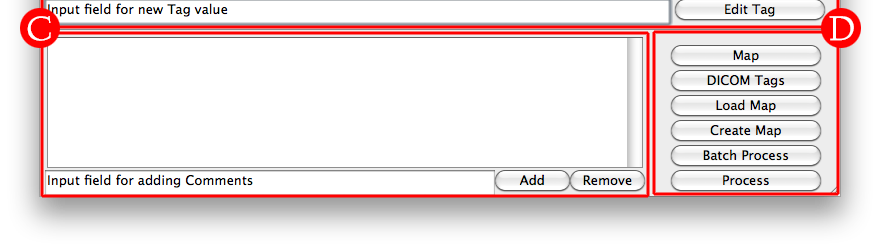

A - Directory Selection
- Single Target Mode : Set the Source Directory to a folder containing only one source Patient.
- Batch Mode : Set the Source Directory to a folder containing multiple source Patients. Batch mode requires that mapping of all the Patients before they may be Batch processed.

B - Tag Editor
- Single Target Mode : It is not necessary to select a patient, the changes will be within the scope of the Source Directory (Caution: Make sure to select only one Patient).
- Batch Mode : After Mapping the Source Directory, the Patients List will be populated with all unique Patients from the Source Directory. Select a Patient and proceed to use the toolkit the same way as single target mode.
- The second dropdown menu selects Tag Groups by their group bytes, this will navigate to different tags to be editted in the left checklist box.
- Santize a Tag : Click it in the left checklist box. If a Tag is checked, it will be santized when Processed.
- Edit a Tag: Click on the desired Tag (The selected Tag will be displayed in the box under the left checklist box), enter a new value for that Tag in the Input Field, then click the Edit Tag button to save the changes.
- All edited Tags will be listed in the right list box. They may be selected and editted from there as well.
- If you wish to no longer change the value of a Tag, select the desired Tag in the right list box and remove it with the Remove Edit button.

C - Private Tag Editor
- Add : Input the desired note or comment into the Input Field and press the Add button.
- Remove : Select the desired tag to delete and press the Remove button.
D - Processing
- Map : Creates a mapping of all the Patients in the Source Directory.
- Load Map : Loads a Map File for batch processing
- Create Map : Generates mapFile.txt from the current Mapping
- Batch Process : Uses the Mapping to commit changes to the DICOM files.
- Process : Commits the changes to the DICOM files